重要
翻訳は あなたが参加できる コミュニティの取り組みです。このページは現在 83.86% 翻訳されています。
16. 点群の操作
16.1. 点群入門
点群とは？
点群とは、多数のデータ点（最大数十億、数兆）からなる空間の3次元画像です。各点はx、y、z座標を持ちます。キャプチャ方法にもよりますが、点群には通常、色値や強度など、キャプチャに由来した追加属性もあります。これらの属性は、例えば、異なる色で点群を表示するために使用することができます。QGISでは、点群を使って風景（または別の空間）の3次元画像を生成することができます。
サポートしている形式
QGISは、Entwine Point Tile (EPT)とLAS/LAZのデータ形式に対応しています。点群データを扱う場合、QGISは常にEPTでデータを保存します。EPTは、共通のフォルダーに保存される複数のファイルで構成された保存形式です。データに素早くアクセスできるように、EPTはインデックスを使います。EPT形式の詳細については、entwine homepage を参照してください。
データがLASまたはLAZ形式の場合、QGISは初回に読み込む時にEPTに変換します。ファイルの大きさによっては、これに時間がかかる場合があります。この処理では、LAS/LAZファイルがあるフォルダに、 ept_ + name_LAS/LAZ_file というスキームでサブフォルダーが作られます。そのようなサブフォルダーがすでに存在する場合、QGISはEPTをすぐに読み込みます（読み込み時間の短縮につながります）。
知っておくべきこと
QGISでは（まだ）点群を編集することはできません。点群を操作したい場合は、オープンソースの点群処理ツールである CloudCompare を使うことができます。また、Point Data Abstraction Library （PDAL - GDALに似ている）は点群を編集するオプションを提供しています（PDALはコマンドラインのみです）。
データ点の数が多いため、QGISでは点群の属性テーブルを表示することはできません。しかし、 地物情報を表示ツール は点群をサポートしているので、1つのデータ点のものであっても全ての属性を表示することができます。
地物情報を表示ツール は点群をサポートしているので、1つのデータ点のものであっても全ての属性を表示することができます。
既存の点群レイヤから、同じ形式か対応している別の形式で新しいレイヤを作成したい場合は、既存のレイヤから新しいレイヤを作成する を参照してください。
16.2. 点群のプロパティ
点群レイヤの レイヤプロパティ ダイアログは、レイヤとそのレンダリングに関する一般的な設定を提供します。また、レイヤの情報も提供します。
レイヤプロパティ ダイアログにアクセスするには：
レイヤ パネルでレイヤをダブルクリックするか、右クリックしてコンテキストメニューから プロパティ... を選択する；
レイヤを選択した状態で、 メニューを選ぶ
点群 レイヤプロパティ ダイアログには次のセクションがあります：

{kind=link}
注釈
点群レイヤのプロパティのほとんどは、プロパティダイアログの下部にある スタイル メニューを使って .qml ファイルに保存したり、そこから読み込んだりすることができます。詳細は レイヤのプロパティの保存および共有 を参照してください。
16.2.1. 情報プロパティ
 情報 タブは読み取り専用で、現在のレイヤの要約された情報やメタデータをさっと掴むことができる興味深い場所です。提供される情報には、以下のものがあります：
情報 タブは読み取り専用で、現在のレイヤの要約された情報やメタデータをさっと掴むことができる興味深い場所です。提供される情報には、以下のものがあります：
一般には、プロジェクトでの名前、ソースパス、最終保存日時と大きさ、使用されたプロバイダなど
カスタムプロパティには、そのレイヤに関する追加情報をアクティブなプロジェクトに保存するために使用されます。デフォルトのカスタムプロパティには、レイヤノート を含めることができます。PyQGIS、具体的には setCustomProperty() メソッドを使ってより多くのプロパティを作成・管理することができます。
レイヤのプロバイダに基づいた：領域と点の数
空間参照系：名前、単位、方法、精度、参照（即ち、静的か動的のいずれか）
プロバイダからのメタデータ：作成日、バージョン、データフォーマット、縮尺X/Y/Z…
 メタデータ タブから選ばれた（編集可能な）：アクセス、領域、リンク、連絡先、履歴…
メタデータ タブから選ばれた（編集可能な）：アクセス、領域、リンク、連絡先、履歴…
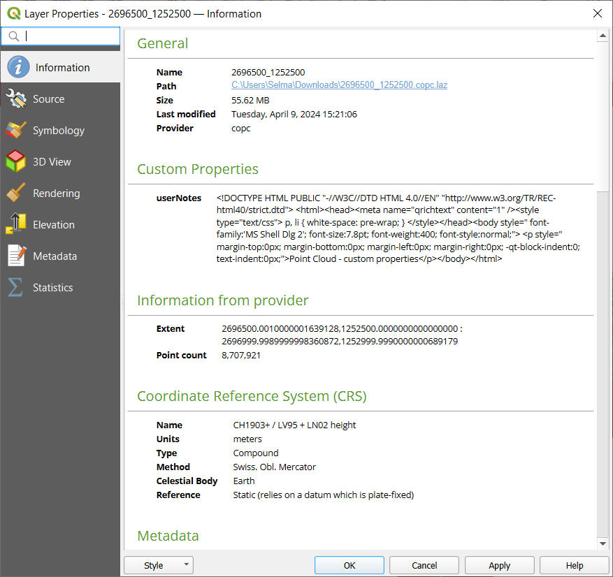
図 16.1 点群情報タブ
16.2.2. ソースプロパティ
 ソース タブでは、点群レイヤの基本情報を確認・編集することができます：
ソース タブでは、点群レイヤの基本情報を確認・編集することができます：
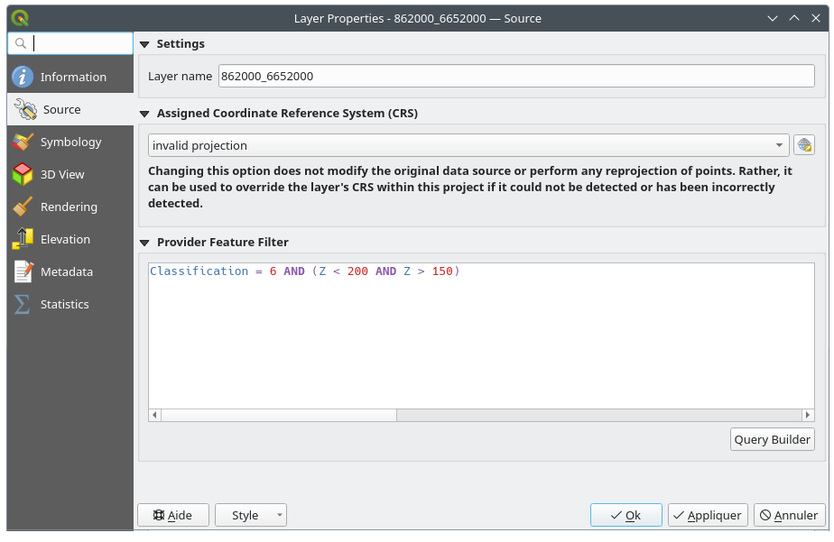
図 16.2 点群のソースタブ
設定: プロジェクト（レイヤパネル、式、印刷レイヤ凡例…）でレイヤを識別するのに使われるレイヤ名をレイヤファイル名と異なるものに設定します
設定されたCRS： ここではレイヤに割り当てられている 座標参照系 を変更することができます。ドロップダウンリストで最近使用したものを選択するか、
 set Projection Select CRS ボタンをクリックします(参照 座標参照系セレクタ)。この処理は、レイヤに適用されている CRS が誤っている場合や、何も適用されていない場合にのみ使用します。
set Projection Select CRS ボタンをクリックします(参照 座標参照系セレクタ)。この処理は、レイヤに適用されている CRS が誤っている場合や、何も適用されていない場合にのみ使用します。
プロバイダ地物フィルタ: PDALデータプロバイダレベルの関数と式を使用して、現在のプロジェクトで使用するデータをサブセットに制限することができます。下部の クエリビルダ ボタンを押してフィルタの設定を開始します。
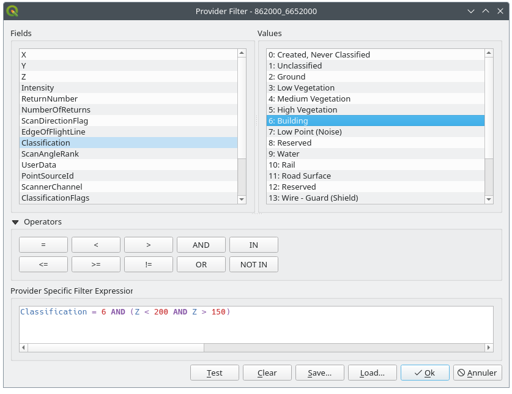
図 16.3 点群レイヤを特定の高度にある建物にフィルタする
ダイアログの下部には、プロバイダ特有のフィルタ式 を入力できます。このような式は、以下の機能により作成できます:
属性: このリストには、点群レイヤのすべての属性が含まれています。 式に属性を追加するには、その名前をダブルクリックするか、テキストボックスに直接入力します。
値: フレームは、現在選択されている属性の値または統計情報を
キー:値のペアでリスト表示します。値を式フィールドに追加するには、リスト内の名前をダブルクリックし、属性の型に応じて、キーまたは値を式に追加します。あるいは値を式のテキストボックスに入力します。演算子: このツールバーには使用可能な全ての演算子が含まれています。演算子を式フィールドに追加するには、該当するボタンをクリックします。関係演算子（
=、>、...）および論理演算子（AND、OR、...）が利用可能です。
テスト ボタンは、クエリの構文をチェックするのに役立ちます。クリア ボタンを使用してクエリを消去し、レイヤを元の状態（すなわち、レイヤ内の全ての点を完全に読み込んだ状態）に戻します。クエリを
.QQFファイルとして 保存... したり、ファイルからダイアログにクエリを 読み込み... したりすることができます。フィルタが適用されると、QGISは結果として得られるサブセットをあたかもレイヤ全体であるかのように扱います。例えば、建物をフィルタするために: ref:filter above <figure_point_cloud_querybuilder> を適用した場合、例えば、植生分類に属する点を表示、クエリ、保存、編集することはできません。なぜなら、それらはサブセットの一部ではないからです。
Tip
レイヤパネル内におけるフィルタされたレイヤの表示
レイヤ パネルでは、フィルタされたレイヤがリスト表示され、その横に
 フィルタ アイコンが表示されます。マウスをそのアイコン上に置くと、使われたクエリが示されます。アイコンをダブルクリックすると、編集用に クエリビルダ ダイアログが開きます。この操作は、 メニューからも実行できます。
フィルタ アイコンが表示されます。マウスをそのアイコン上に置くと、使われたクエリが示されます。アイコンをダブルクリックすると、編集用に クエリビルダ ダイアログが開きます。この操作は、 メニューからも実行できます。
16.2.3. シンボロジプロパティ
 シンボロジ タブでは、点群のレンダリングの設定を行います。上部には、異なる地物レンダラーの設定があります。下部には、レイヤ全体の一般的な設定と、地物レンダラーに適用される設定があります。
シンボロジ タブでは、点群のレンダリングの設定を行います。上部には、異なる地物レンダラーの設定があります。下部には、レイヤ全体の一般的な設定と、地物レンダラーに適用される設定があります。
16.2.3.1. 地物レンダリングタイプ
点群のレンダリングにはさまざまなオプションがあり、 シンボロジ タブの上部にあるドロップダウンメニューで選択することができます（ 図 16.4 を参照）：
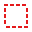
範囲のみ： データの範囲のバウンディングボックスのみを表示します；データの範囲を概観するのに便利です。普通通り、 シンボル ウィジェット を使用することで、ボックスのプロパティ（色、ストローク、不透明度、サブレイヤなど）を設定することができます。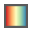
ランプによる属性: データはカラーグラデーション上に描画されます。ランプによる属性 を参照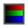
RGB： 赤、緑、青の色値を用いてデータを描画します。RGBレンダラー を参照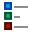
分類： データは分類ごとに異なる色で描画されます。分類レンダラー を参照してください
{kind=link}
{kind=link}
{kind=link}
{kind=link}
点群が読み込まれると、QGISはロジックに従って最適なレンダラーを選択します：
データセットに色情報（赤、緑、青属性）が含まれている場合、RGBレンダラーが使われます
そうではなく、データセットに
Classification属性が含まれていれば、分類レンダラーが使われますそうでなければ、Z属性に基づくレンダリングにフォールバックします
点群の属性がわからない場合は、 統計量の出力 タブ を参照すると、点群にどの属性が含まれていて、どの範囲に値があるのかの概要を知ることができます。
For each renderer, you can improve the data display adjusting the point symbol size or enabling surface triangulation.
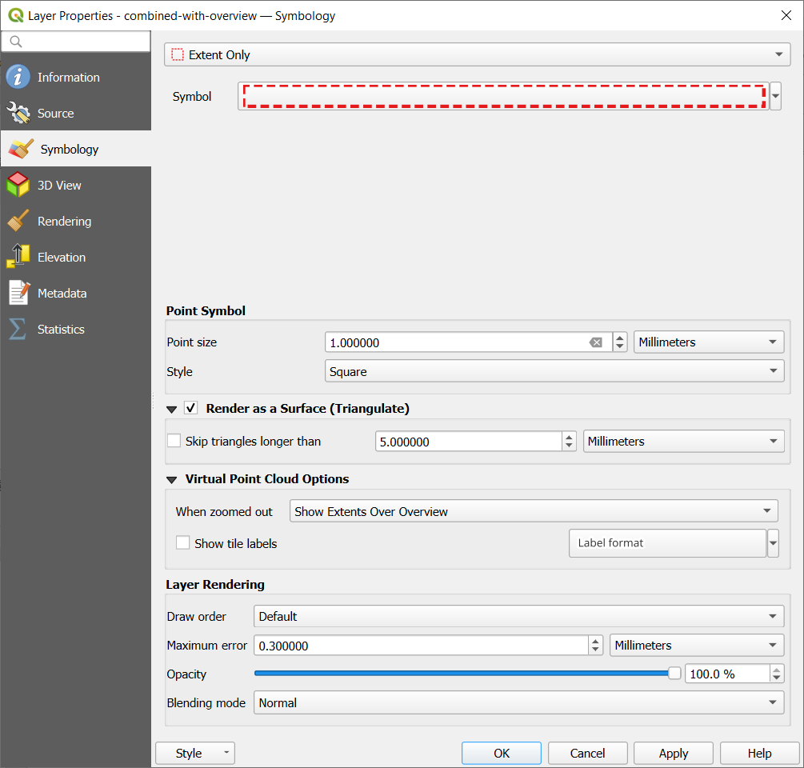
図 16.4 点群シンボロジタブ
ランプによる属性
ランプによる属性 では、データをカラーグラデーション上の数値で表示することができます。このような数値は、例えば、既存の強度属性やZ値にすることができます。最小値と最大値により、他の値は内挿によってカラーグラデーションに広がります。明確な値と特定の色への割り当ては「カラーマップ」と呼ばれ、表に示されます。様々な設定オプションがあり、それらは図の下に説明されています。
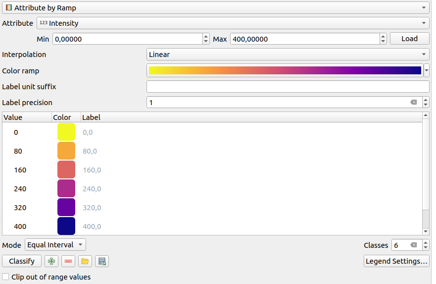
図 16.5 点群シンボロジタブ：ランプによる属性
最小値 と 最大値 はカラーランプに適用される範囲を定義します： 最小値 の値はカラーランプの左端、 最大値 の値は右端を表し、その間の値は内挿されます。デフォルトでは、QGISは選択された属性から最小値と最大値を検出しますが、変更することもできます。値を変更したら、読み込み ボタンをクリックしてデフォルトに戻すことができます。
内挿 の項目は、値にどのように色が割り当てられるかを定義します：
離散値 （
<=シンボルが 値 カラムのヘッダに表示されます）：ラスタの色には、その値以上で最も近いカラーマップのエントリを使用します線形 ピクセル値の上下にあるカラーマップの項目から線形補間された色であり、データセット値毎にユニークな色に対応します
正確な （
=シンボルが 値 カラムのヘッダに表示されます）：カラーマップエントリの値に等しい値を持つピクセルだけに色が適用されます。その他の値のピクセルはレンダリングされません。
カラーランプ ウィジェットは、データセットに割り当てるカラーランプを選択するのに役立ちます。このウィジェット と同様に、新しいウィジェットを作ったり、現在選択されているウィジェットを編集して保存することができます。
ラベルの単位の接尾辞 は、凡例内で値の後ろにラベルを追加します。また、 ラベルの精度 は表示する小数点以下の桁数を制御します。
分類の モード は、クラス間でどのように値が分布するかを定義できます：
連続的： クラス番号と色はカラーランプのストップから取得されます; 限界値はカラーランプのストップの分布に従って設定されます (ストップに関する詳細は カラーランプの設定 を参照してください)。
等間隔分類： クラスの数は行末の クラス フィールドによって設定されます; 限界値はクラスがすべて同じ大きさになるように定義されます。
クラスは自動的に決定され、カラーマップ表に表示されます。しかし、手動でこれらのクラスを編集することもできます：
テーブルの 値 をダブルクリックするとクラス値を変更することができます
guilabel:色 列をダブルクリックすると カラーセレクタ ウィジェットが開き、その値に適用する色を選択することができます
ラベル 列をダブルクリックするとクラスのラベルを変更することができます
カラーテーブルで選択された行の上で右クリックすると、 色を変更... と 不透明度を変更... のコンテキストメニューが表示されます
テーブルの下には、分類 でデフォルトのクラスに戻すか、手動で値を  追加 するか、表から選択した行を
追加 するか、表から選択した行を  削除 するオプションがあります。
削除 するオプションがあります。
カスタマイズされたカラーマップは非常に複雑になる可能性があるため、既存のカラーマップを  読み込む オプションや、他のレイヤで使用するために（
読み込む オプションや、他のレイヤで使用するために（ txt ファイルとして）  保存 するオプションもあります。
保存 するオプションもあります。
内挿 で 線形 を選択した場合は、以下の設定も可能です：
 範囲外の値を無視 デフォルトで、線形法はデータセットの値のうち、設定された 最小値 より小さな値（設定された 最大値 より大きな値）に対して最初のクラス（最後のクラス）の色を割り当てます。これらの値をレンダリングしたくない場合は、この設定をチェックしてください。
範囲外の値を無視 デフォルトで、線形法はデータセットの値のうち、設定された 最小値 より小さな値（設定された 最大値 より大きな値）に対して最初のクラス（最後のクラス）の色を割り当てます。これらの値をレンダリングしたくない場合は、この設定をチェックしてください。凡例の設定 は レイヤ パネルと レイアウト凡例 に表示されます。カスタマイズはラスタレイヤと同じように動作します（詳細は ラスタの凡例のカスタマイズ を参照してください）。
RGBレンダラー
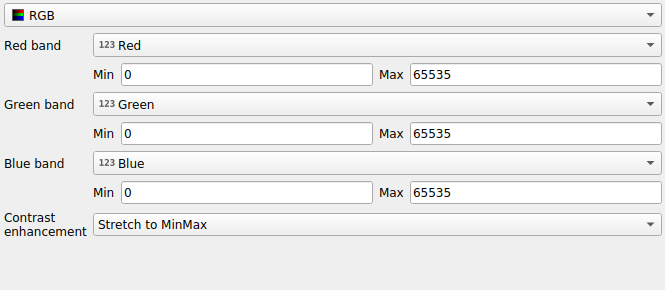
図 16.6 点群RGBレンダラー
multibandColor| RGB レンダラーでは、点群から選択された3つの属性が赤、緑、青の成分として使用されます。属性に適切な名前が付けられている場合、QGISは自動的に属性を選択し、各バンドの 最小値 と 最大値 を取得し、それに応じてカラーリングをスケーリングします。しかし、手動で値を変更することも可能です。
コントラスト 方法には、 強調しない、 最小最大範囲に引き伸ばす、 最小最大範囲に引き伸ばしカット、 最小から最大までの範囲以外は無視 の値が適用できます
注釈
コントラスト ツールはまだ開発中です。問題がある場合は、デフォルトの 最小最大範囲に引き伸ばす を使用してください。
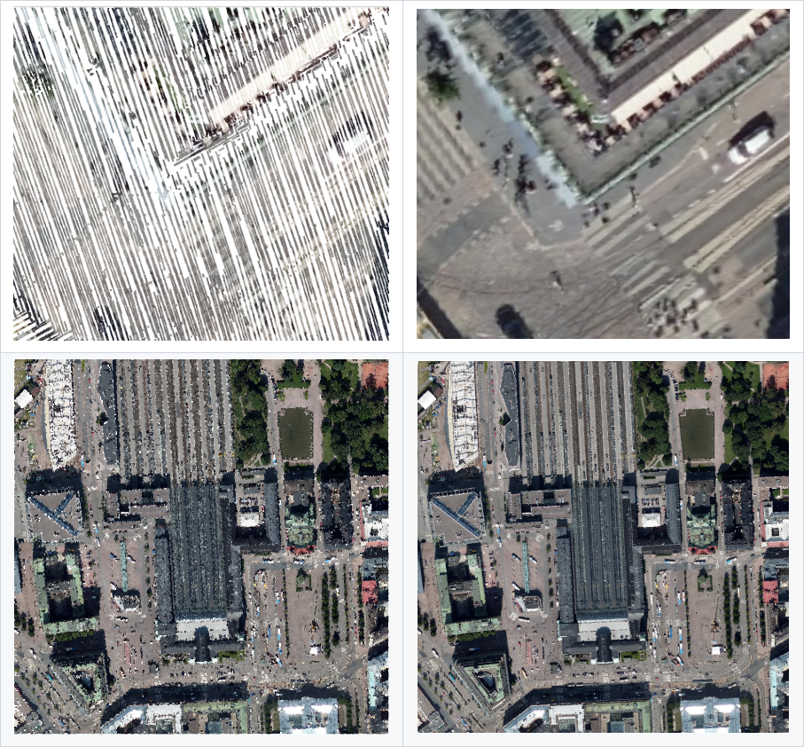
図 16.7 Example of RGB renderer (left) combined with surface triangulation option (right)
分類レンダラー
分類 レンダリングでは、点群は属性に基づいて色分けされて表示されます。属性はどのようなタイプでも使用できます（数値、文字列、...）。点群データにはしばしば Classification というフィールドが含まれます。このフィールドには通常、後処理によって自動的に決定された植生などのデータが含まれます。属性 を使うと、属性テーブルから分類に使用するフィールドを選択することができます。デフォルトでは、QGISはLAS仕様の定義を使用します（ASPRSホームページ にあるPDFの 'ASPRS標準点クラス' の表を参照してください）。しかし、データはこのスキーマから逸脱している可能性があります。疑問がある場合は、データを受け取った人や機関に定義を問い合わせる必要があります。
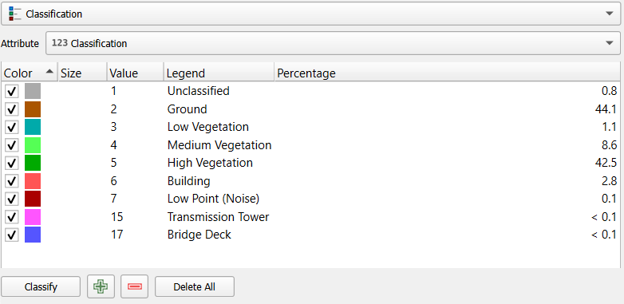
図 16.8 点群分類レンダラー
In the table all used values are displayed with the corresponding color and
legend. At the beginning of each row there is a check box; if it is
unchecked, this value is no longer shown on the map. With double click in the
table, you can modify:
the Color: the カラーセレクタ widget opens
the Size: assigning a size of
0to a category will revert it to use the default point size set for the layerthe Value
the Legend
the Percentage column will show you the representation of the category within the layer.
You can also right-click one or more rows to open a context menu with the options to change the color, opacity or point size.
表の下にはボタンがあり、QGISが生成するデフォルトクラスを変更することができます：
guilabel:分類 ボタンを使用すると、データを自動的に分類することができます：属性に出現し、テーブルにまだ存在しないすべての値が追加されます
- 追加 と 削除 を使うと、値を手動で追加または削除できます
すべて削除 は表からすべての値を取り除きます
ヒント
レイヤ パネルでは、レイヤのクラスリーフエントリの上で右クリックすると、対応する地物の可視性を素早く設定することができます。
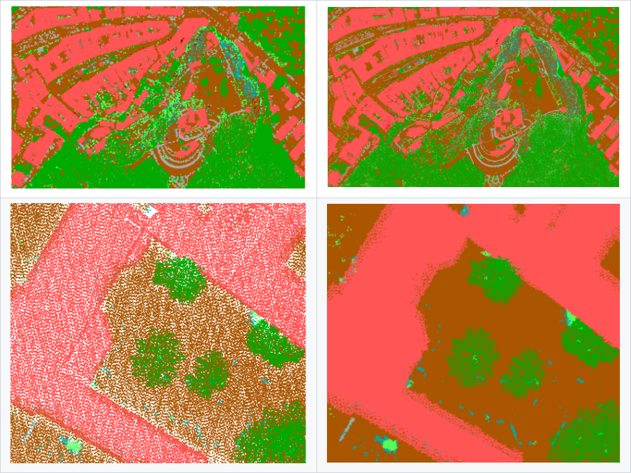
図 16.9 Example of classification renderer (left) combined with surface triangulation option (right)
16.2.3.2. 点シンボル
点シンボル では、各データポイントを表示する大きさと単位（ミリメートル、ピクセル、インチなど）を設定することができます。点のスタイルとして 円 または Square が選択できます。
16.2.3.3. Render as a surface (Triangulate)
Check Render as surface (Triangulate) to enable the triangulation
of the point cloud layer in the 2D view. This option allows rendering triangles instead of points.
Each point keeps its color for interpolation in the triangle.
You can control the horizontal length of computed triangles:
By checking the Skip triangles longer than option and setting up
the threshold value, you can control the maximum length of a side of the triangles
to consider in the horizontal plan. This can be particularly useful if you want to
identify actual holes in the data.
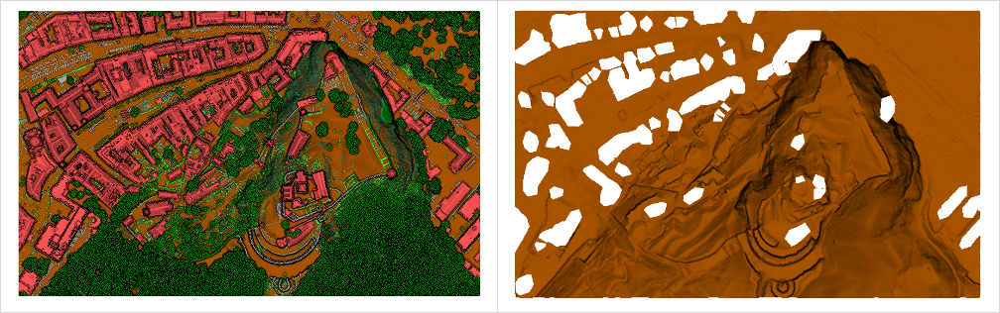
図 16.10 Rendering data as a surface with map shading (left) and with map shading, filtering large triangles (right)
16.2.3.4. Virtual Point Cloud Options
The Virtual Point Cloud Options are available only when the layer is a virtual point cloud (VPC). QGIS renders the overview of the VPC when zoomed out, if an overview is present. This provides a seamless transition from the overview to the detailed display of individual point clouds as you zoom in.
You can control how the VPC is displayed when zoomed out using the available options:
Show Extents Only: Only the extents of the underlying point clouds are displayed.
Show Overview Only: Only the overview is displayed (if available).
Show Extents Over Overview: The extents are displayed on top of the overview.
You can also choose to Show tile labels to display the tile names and set the label format.
16.2.3.5. レイヤレンダリング
レイヤレンダリング セクションには、レイヤのレンダリングを変更するための以下のオプションがあります：
描画順: 2次元マップキャンバス上の点群のレンダリング順をZ値に依存するかどうかを制御できます。次でレンダリングすることができます:
点がレイヤに格納されている デフォルト 順、
:guilabel:`下から上`（Z値が大きい点は低い点を覆い、真のオルソ写真のように見える）、
または、情景を下から見ているように見える 上から下。
最大エラー: 点群には通常、表示に必要な以上の点が含まれています。このオプションで、点群の表示をどの程度密にするか、または疎にするかを設定します（これは「点間の最大許容ギャップ」とも理解できます）。大きな数値（例：5 mm）を設定すると、点と点の間に目に見える隙間ができます。低い値（例：0.1mm）を設定すると、不必要な量の点をレンダリングすることになり、レンダリングが遅くなります（異なる単位を選択することができます）。
不透明度： このツールでマップキャンバスの下にあるレイヤを表示させることができます。スライダーを使ってレイヤの可視性をニーズに合わせて調整します。また、スライダーの横のメニューで可視性のパーセンテージを正確に定義することもできます。
混合モード： このツールで特殊なレンダリング効果を得ることができます。オーバーレイレイヤとその下のレイヤのピクセルは、混合モード で説明されている設定によって混合されます。
アイドーム照明: これはマップキャンバスにシェーディング効果を適用し、より良い深度レンダリングを行います。レンダリングの品質は draw order プロパティに依存します。デフォルト の描画順では最適な結果が得られないかもしれません。以下のパラメータを制御することができます:
強度: コントラストを増加し、奥行き感を与えます
距離: 中心ピクセルからの使用ピクセルの距離を表し、エッジを太くする効果があります。
16.2.4. 3Dビュープロパティ
 3Dビュー タブでは、3Dマップでの点群のレンダリングの設定を行うことができます。
3Dビュー タブでは、3Dマップでの点群のレンダリングの設定を行うことができます。
16.2.4.1. 3Dレンダリングモード
タブ上部のドロップダウンメニューから以下のオプションが選択できます：
レンダリングしない: データは表示されません
2Dシンボルに従う: 3Dの地物レンダリングを 2Dに割り当てたシンボロジ に合わせます
単一色： すべての点は属性に関係なく同じ 色 で表示されます
ランプによる属性： 指定された属性をカラーランプで補間し、それにマッチする色を地物に割り当てます。ランプによる属性 を参照。
RGB： 地物に割り当てる赤、緑、青の色成分を設定するために、地物の異なる属性を使います。RGBレンダラー を参照。
分類: 属性に基づいてポイントを色で区別します。分類レンダラー を参照。
{kind=link}
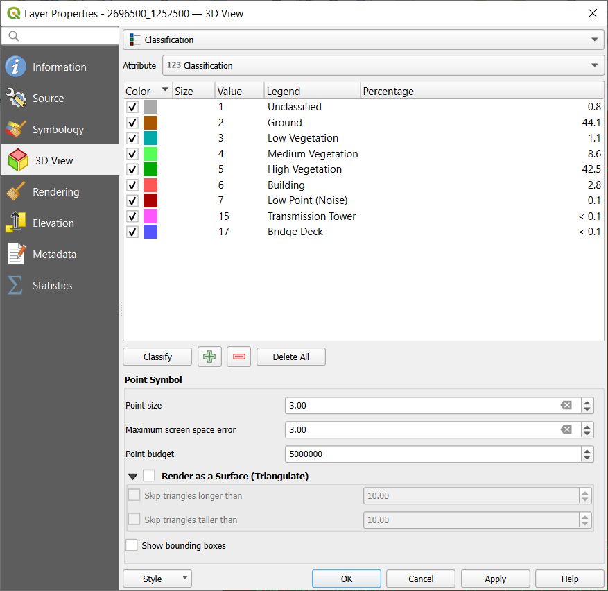
図 16.11 点群3Dビュータブと分類レンダラー
16.2.4.2. 3D点シンボル
3Dビュー タブの下部には 点シンボル セクションがある。ここでは全てのレンダラに同じ、レイヤ全体の一般的な設定を行うことができる。以下のオプションがある：
点の大きさ: 各データポイントを表示する大きさ（ピクセル単位で）を設定できます
最大画面誤差： このオプションで、点群の表示を（ピクセル単位で）どの程度密にするか、または疎にするかを設定します。大きな数値（例 10）を設定すると、点と点の間に目に見える隙間ができます。低い値（例 0）を設定すると、不必要な量の点をレンダリングすることになり、レンダリングが遅くなります（詳細は シンボロジ 最大エラー を参照）。
Point budget： 長時間のレンダリングを避けるために、レンダリングされるポイントの最大数を設定できます
- サーフェス（三角網）としてレンダリング をチェックすると、3Dビューの点群レイヤを三角形分割によって得られた平面でレンダリングします。計算された三角形の寸法を制御できます：
- スキップする三角形の幅の下限: 水平面で、三角形の一辺の長さの最大値を設定します
- スキップする三角形の高さの下限: 垂直面で、三角形の一辺の高さの最大値を設定します
- バウンディングボックスを表示： 特にデバッグに便利で、階層内のノードのバウンディングボックスを表示します
16.2.5. レンダリングプロパティ
縮尺に応じた表示設定 グループボックスの下で、 最大縮尺（含む）`と :guilabel:`最小縮尺（含まない） を設定し、地物を可視とする縮尺の範囲を定義することができます。この範囲外では隠される。 現在のキャンバスが表示している縮尺を設定 ボタンを使うと、現在のマップキャンバスの縮尺を可視範囲の境界として使うことができます。詳しくは 表示縮尺セレクタ を参照してください。
現在のキャンバスが表示している縮尺を設定 ボタンを使うと、現在のマップキャンバスの縮尺を可視範囲の境界として使うことができます。詳しくは 表示縮尺セレクタ を参照してください。
注釈
レイヤの縮尺に応じた表示は、レイヤ パネルからも有効にすることもできます: レイヤを右クリックし、コンテキストメニューから レイヤの縮尺表示を設定 を選択します。
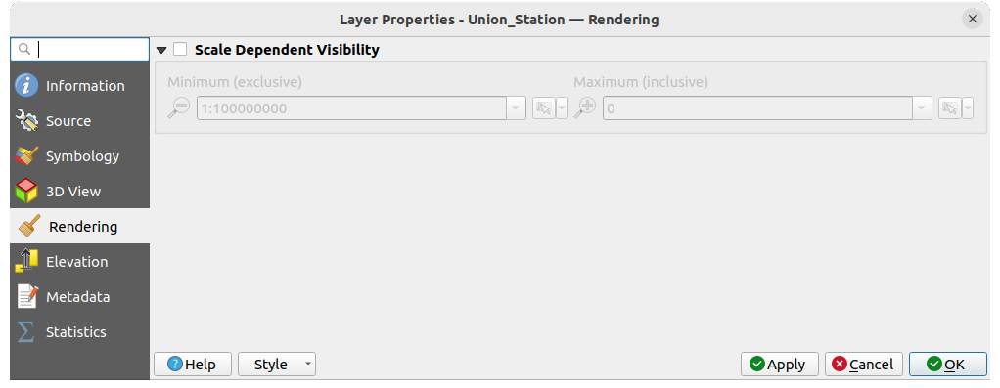
図 16.12 点群レンダリングタブ
16.2.6. 標高プロパティ
 高さ タブでは、データのZ値の補正を設定することができます。これは3Dマップでのデータの標高や、 profile tool charts での見栄えを調整するために必要かもしれません。以下のオプションがあります：
高さ タブでは、データのZ値の補正を設定することができます。これは3Dマップでのデータの標高や、 profile tool charts での見栄えを調整するために必要かもしれません。以下のオプションがあります：
Vertical Reference System: If the CRS of your point cloud layer is a compound one (including a Z dimension), then the vertical CRS used for the layer will be automatically derived from the vertical component of the layer's CRS. In this case, you cannot manually set a different vertical CRS, and the option to change it will be disabled. If your point cloud layer uses a horizontal (2D) CRS (though uncommon), you can manually select a specific vertical CRS by clicking on the
Select CRS.
Vertical reference systems are supported for point cloud layers in:高さ グループの下では:
縮尺 を設定することができます: ここに
10を入力すると、Z =5の点は50の高さで表示されます。zレベルに対する オフセット を入力することができます。これは異なるデータソースの高さを一致させるのに便利です。デフォルトでは、データに含まれる最も低いz値がこの値として使用されます。この値は行末の
 Refresh ボタンで元に戻すこともできます。
Refresh ボタンで元に戻すこともできます。
断面図の精度 の下にある 最大エラー は、標高断面図でレンダリングされる点をどの程度密にするか、または疎にするかを制御するのに役立ちます。値を大きくすると、含まれる点が少なくなり、生成が速くなります。
断面図の外観 では、点の表示を制御できます：
点の大きさ: サポートされている単位（ミリメートル、地図単位、ピクセル、...）で、点をレンダリングするサイズ
スタイル: 円 または 四角 のどちらで点をレンダリングするか
単一の 色 を断面図ビューに表示されている全ての点に適用する
- レイヤーの色に従う をチェックすると、代わりに 2D シンボロジ によって割り当てられた色で点を表示します
 距離に応じた不透明度を適用 は、プロファイル曲線から遠い点の不透明度を下げます
距離に応じた不透明度を適用 は、プロファイル曲線から遠い点の不透明度を下げます
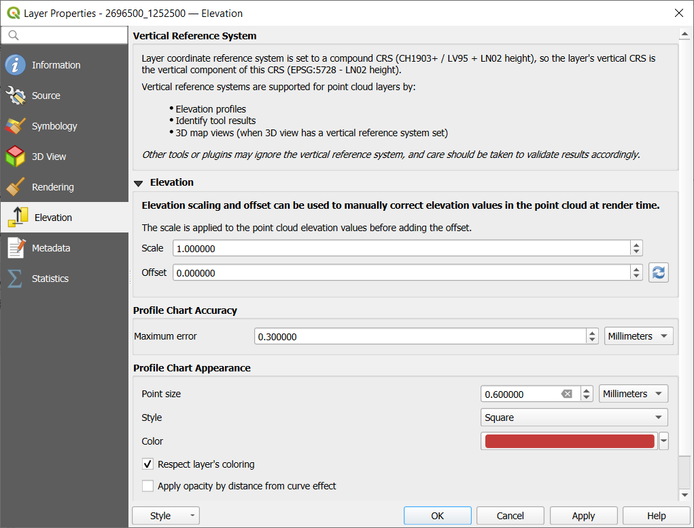
図 16.13 点群高さタブ
16.2.7. メタデータプロパティ
メタデータ タブには、レイヤに関するメタデータレポートの作成・編集オプションがあります。詳細は メタデータ を参照してください。
16.2.8. 統計量の出力プロパティ
統計量の出力 タブでは、点群の属性とその分布の概要を知ることができます。
一番上には 属性の統計量 というセクションがあります。ここには点群に含まれる全ての属性と、その統計値の一部が一覧表示されます： 最小値、最大、平均値、標準偏差
もし Classification という属性があれば、下のセクションに別の表があります。ここには、その属性に含まれる全ての値と、その絶対的な カウント と相対的な % 存在度が一覧にされています。
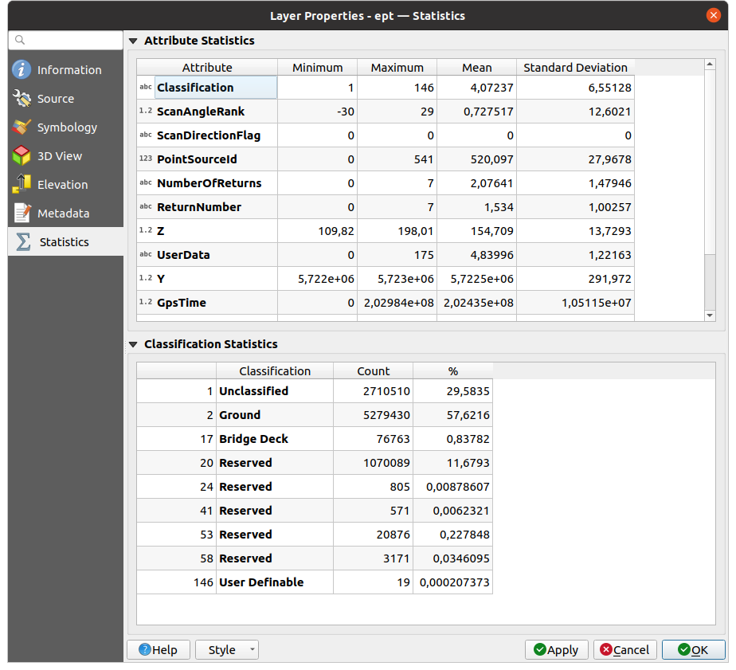
図 16.14 点群 統計量の出力タブ
16.3. 仮想点群
広域のライダー調査は、何十億ものポイントを含む数テラバイトのデータセットになることが多いです。このような大規模なデータセットを1つの点群ファイルとして表現することは、保存、転送、表示、解析が困難なため、現実的ではありません。そのため、点群データは通常、正方形のタイル（例1km x 1kmなど）に分割して保存・配布され、各タイルのファイルサイズはより管理しやすくなっています（圧縮した場合、～200MBなど）。
データをタイル化すると、データのサイズに関する問題は解決されますが、1 つのタイルに完全に収まらない対象地域を処理または表示するときに問題が発生します。ユーザーは、複数のタイルを考慮したワークフローを開発する必要があり、出力に不要なノイズが発生しないように、タイルの端に近いデータの処理には特に注意が必要です。同様に、点群データを表示する場合、多数の個別のファイルをロードして同じシンボルを適用するのは手間がかかります。
Here is an example of several point cloud tiles loaded in QGIS. Each tile is styled based on min/max Z values of the tile, creating visible artefacts on tile edges. The styling has to be adjusted for each layer separately:
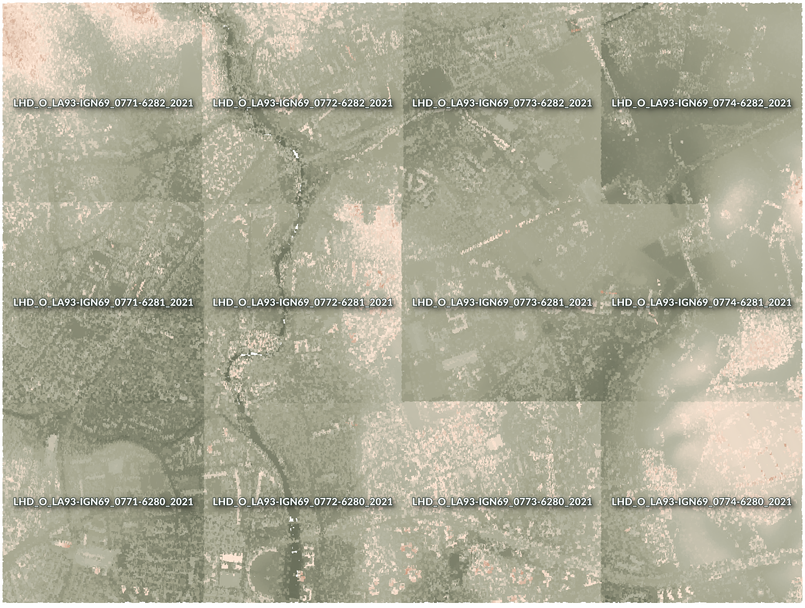
図 16.15 Individual point cloud tiles loaded, with artefacts on edges
In the GIS world, many users are familiar with the concept of virtual rasters. A virtual raster is a file that simply references other raster files with actual data. In this way, GIS software then treats the whole dataset comprising many files as a single raster layer, making the display and analysis of all the rasters listed in the virtual file much easier.
Borrowing the concept of virtual rasters from GDAL, virtual point cloud (VPC) is a file format that references other point cloud files. Software supporting virtual point clouds handles the whole tiled dataset as a single data source.
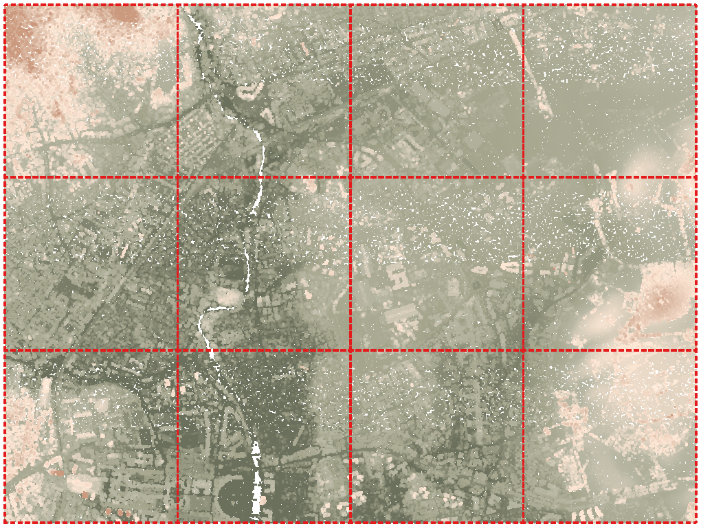
図 16.16 The virtual point cloud
仮想点群の表示と操作がはるかにスムーズかつ簡単になります。

図 16.17 The virtual point cloud output on 2D: displaying details when zooming in
At the core, a virtual point cloud file is a simple JSON file with .vpc extension,
containing references to actual data files (e.g. .LAS, .LAZ or .COPC files)
and additional metadata extracted from the files.
Even though it is possible to write VPC files by hand,
it is strongly recommended to create them using an automated tool, such as:
The Processing 仮想点群(VPC)を作成 algorithm
The
build_vpccommand of PDAL wrench tool
For more details, please refer to the VPC specification that also contains best practices and optional extensions (such as overviews).